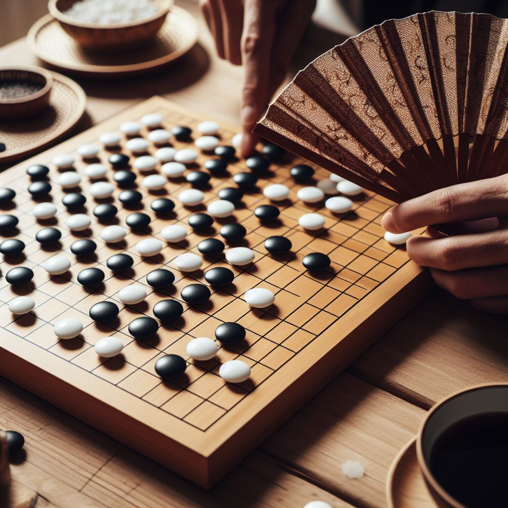
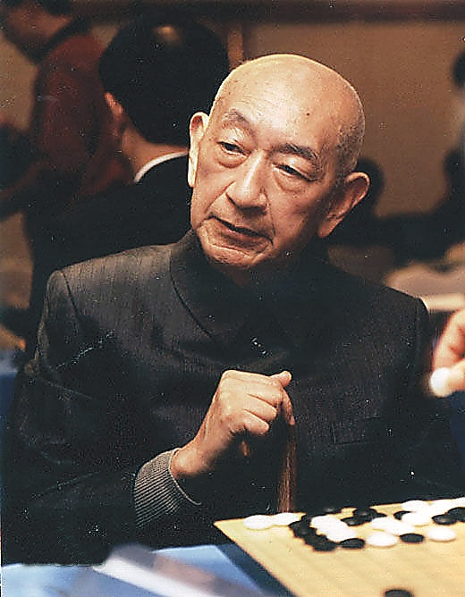
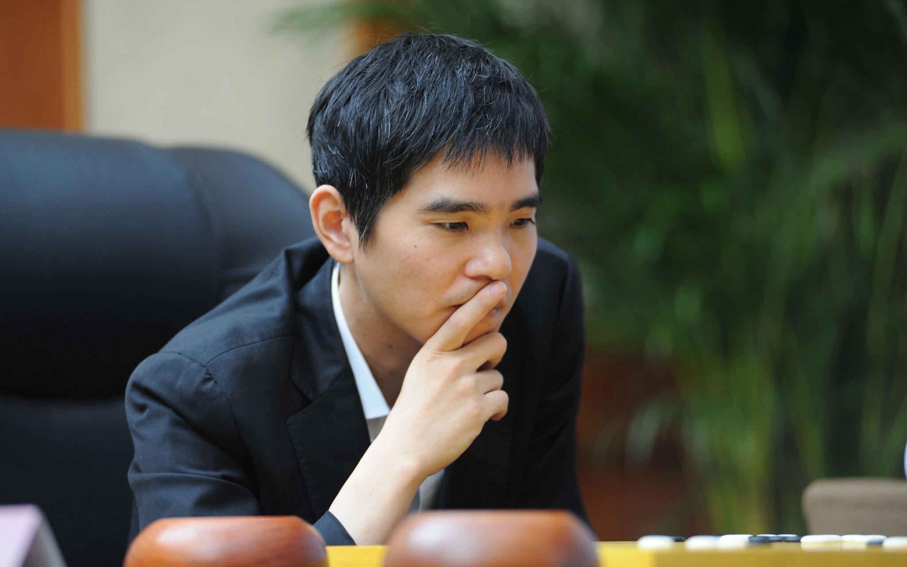
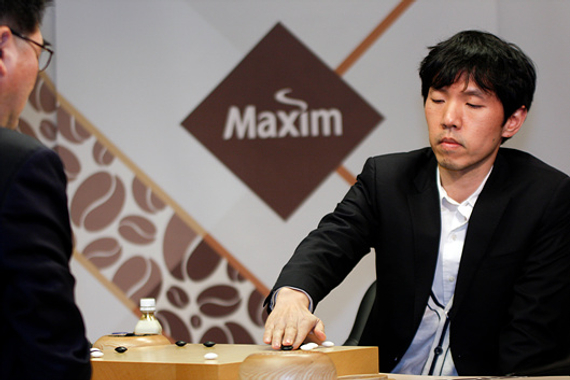
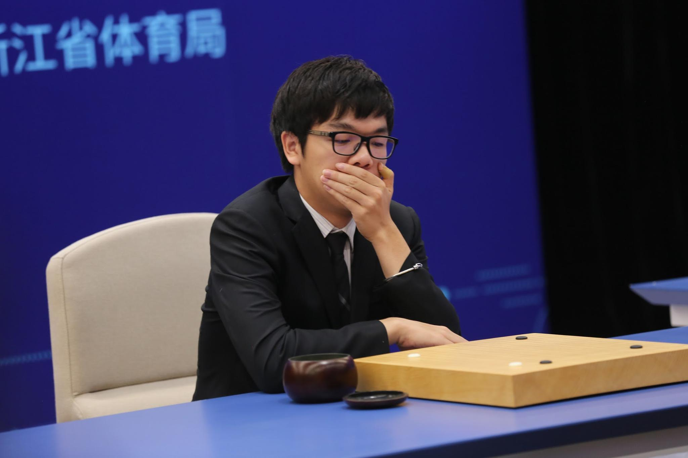

☰
圍棋歷史
起源
中日韓名人介紹
棋盤
棋盤設計
規則
基本死活
死活原則
死活練習
基本題1
基本題2
基本題3
進階題1
進階題2
高手題
作者
專題心得
分工
登出
中日韓名人介紹:

吳清源
圍棋大師
生平:七歲開始學棋，在中國便已難逢敵手，有「天才神童」的美名，後來被日本圍棋長老瀨越憲作帶回日本訓練，此後在1940年代稱霸日本棋壇20年。
成就:開創「新布局時代」，簡單來說就是他捨棄了以前的布局觀念，自己想出了獨特的布局觀念，而這些東西都影響後面時代的圍棋布局。

李世石
圍棋大師
生平: 出道初期於韓國國內戰績顯赫。早期棋風銳利，擅長大規模的攻殺，中盤號稱「十四段」，但布局較差。後來隨著年紀漸長與技術逐漸成熟，開始轉變為全能棋風，能攻能守，剛柔並濟成為一代棋界巨匠。棋風陰柔鬼魅，時常下出鬼手，戰力強大且計算極為精準，時常開局死一大塊棋，接著利用種種味道牽制對手，甚至死棋復活，棋迷稱為「殭屍流」。同時他也有著高水準的心理素質，世界大賽上常在落後的情況下迎頭趕上逆轉拿下勝局。 成就:生涯14次世界冠軍，世界上唯一一個人類贏過Alphago。

李昌鎬
圍棋大師
生平:11歲便成為韓國職業棋士，在未滿17歲時就拿到了世界冠軍，在韓國國內橫掃了各個賽事冠軍，對於形勢的判斷更是當時天下第一，是現代圍棋史上僅次於吳清源的偉大棋士，或稱「二十世紀圍棋，前有吳清源，後有李昌鎬。」。 成就:生涯21次世界冠軍，全盛時期對當時的世界第二有十連勝的紀錄，1990年代獨領風騷，所有人只能爭第二。

柯潔
圍棋大師
生平:未滿18歲便奪得世界冠軍，棋風奔放，與李世石在當時棋逢對手。2015全盛時期成為中國第二位8冠王，之後在2017年輸給Alphago後，便在之後的比賽豪取20連勝。 成就:八冠王，傳奇續寫中。 變成一樣的格式